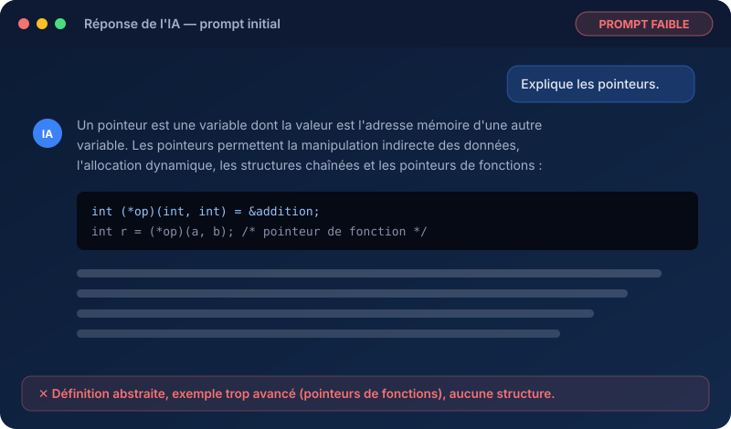
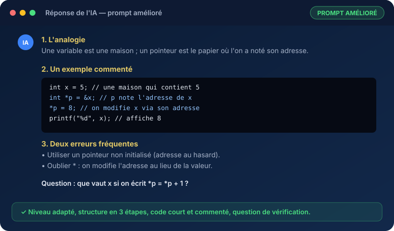
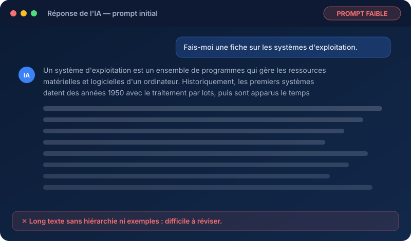
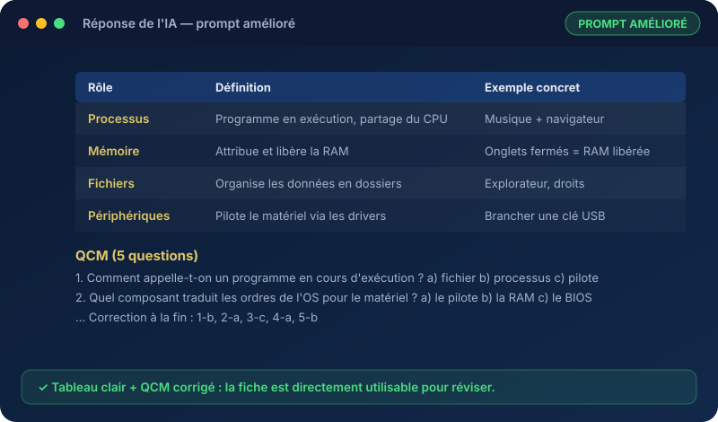
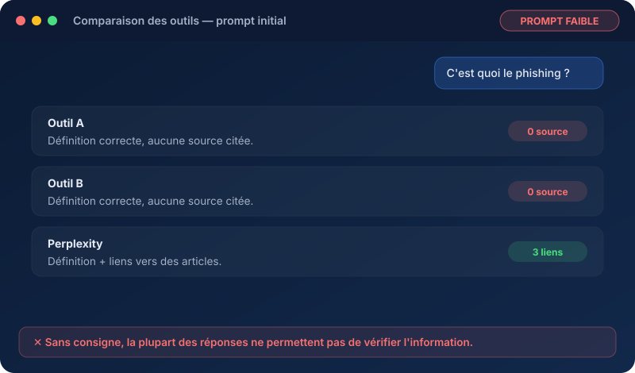
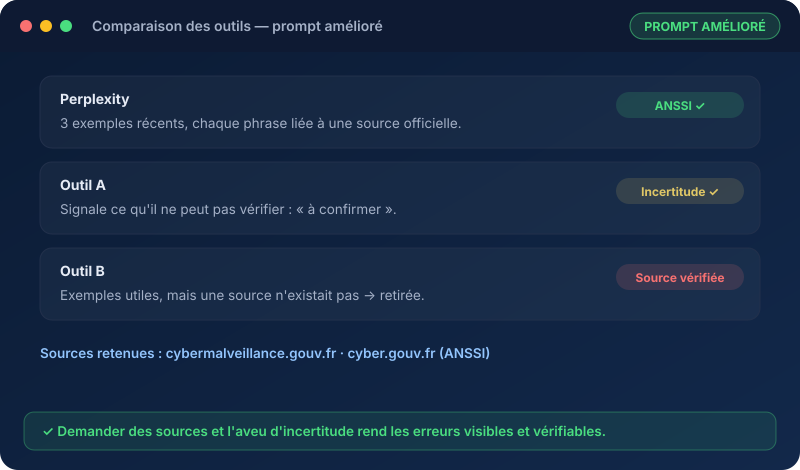

Apprendre à formuler des demandes précises pour obtenir de meilleurs résultats d'une IA : rôle, contexte, tâche, format, contraintes et exemples.
Rôle
Contexte
Format
Itération
Claude
ChatGPT
Perplexity
Résumé du cours
1. Les 6 éléments d'un bon prompt
Élément
Question à se poser
Exemple
Rôle
Qui doit répondre ?
« Tu es un professeur de C patient… »
Contexte
Quelle est la situation ?
« Je suis en 1ère année, j'ai un examen lundi. »
Tâche
Que faut-il faire exactement ?
« Explique les pointeurs. »
Format de sortie
Sous quelle forme ?
« Un tableau puis 3 exercices. »
Contraintes
Quelles limites ?
« 200 mots maximum, sans jargon. »
Exemples
À quoi ressemble un bon résultat ?
« Voici un exercice du même style : … »
2. Les techniques
Raisonnement étape par étape : demander à l'IA de détailler ses étapes réduit les erreurs de logique.
Fournir des exemples (few-shot) : l'IA imite le style et le niveau attendus.
Itérer et affiner : le premier résultat est un brouillon ; on corrige le prompt selon ce qui manque.
Demander une vérification : « Relis ta réponse et signale ce dont tu n'es pas sûr. »
3. Comparer les outils
Outil
Point fort
À surveiller
Claude
Explications structurées, textes longs, code
Vérifier les faits récents
ChatGPT
Polyvalent, nombreux formats
Peut inventer des sources
Grok
Actualité et ton direct
Style parfois peu académique
Perplexity
Réponses avec sources citées
Toujours ouvrir les sources
Règle d'or : l'IA est un assistant, pas un remplaçant. Je dois pouvoir expliquer chaque phrase que je publie.
Carte mentale
Survolez (ou sélectionnez au clavier) une branche pour la mettre en évidence. Sur téléphone, faites défiler horizontalement.
3 cas pratiques et bibliothèque de prompts
Cas 1 — Comprendre les pointeurs en C
Prompt initial (faible)
Explique les pointeurs.
Résultat obtenu
Une définition générale et abstraite, avec un exemple trop avancé (pointeurs de fonctions).

Prompt amélioré
Tu es un professeur de langage C patient.
Je suis étudiante en 1ère année et je bloque sur les pointeurs.
Explique ce qu'est un pointeur en 3 étapes :
1) une analogie de la vie courante,
2) un exemple de code C de 10 lignes maximum, commenté ligne par ligne,
3) deux erreurs fréquentes à éviter.
Utilise un vocabulaire simple et termine par une question pour vérifier que j'ai compris.
Résultat obtenu
Une analogie (l'adresse d'une maison), un code court avec & et * commenté, les erreurs « pointeur non initialisé » et « oubli de * ».

Analyse
Le rôle et le contexte ont adapté le niveau ; le format en 3 étapes a rendu la réponse structurée ; la contrainte « 10 lignes » a évité un exemple trop complexe.
Cas 2 — Préparer une fiche de révision
Prompt initial (faible)
Fais-moi une fiche sur les systèmes d'exploitation.
Résultat obtenu
Un long texte sans hiérarchie, difficile à réviser.

Prompt amélioré
Rôle : tu es un tuteur qui prépare des fiches de révision.
Contexte : examen de 1ère année sur les systèmes d'exploitation.
Tâche : rédige une fiche sur les 4 rôles d'un OS (processus, mémoire, fichiers, périphériques).
Format : un tableau (rôle | définition | exemple concret), puis 5 questions de type QCM avec la correction à la fin.
Contraintes : une page maximum, définitions de 2 lignes.
Résultat obtenu
Un tableau clair de 4 lignes et un QCM corrigé, directement utilisable.

Analyse
Préciser le format (tableau + QCM) a transformé un texte en outil de révision. Mettre la correction à la fin permet de s'auto-tester.
Cas 3 — Comparer les outils sur une recherche sourcée
Prompt initial (faible)
C'est quoi le phishing ?
Résultat obtenu
Claude et ChatGPT : définition correcte mais sans source. Perplexity : définition avec liens.

Prompt amélioré
Explique ce qu'est l'hameçonnage (phishing) pour un public étudiant.
Donne 3 exemples concrets récents, et pour chaque affirmation cite une source officielle (ANSSI, Cybermalveillance.gouv.fr).
Si tu n'es pas certain d'une information, dis-le explicitement.
Résultat obtenu
Perplexity fournit les liens officiels ; Claude signale ce qu'il ne peut pas vérifier ; ChatGPT donne des exemples mais une source était invalide → vérifiée et retirée.

Analyse
Demander des sources et l'aveu d'incertitude rend les erreurs visibles. Comparer plusieurs outils montre qu'il faut toujours vérifier soi-même.
Bibliothèque de prompts réutilisables
1. Expliquer une notion
Tu es un professeur patient. Explique [NOTION] à une étudiante de 1ère année avec une analogie, un exemple simple et 2 erreurs fréquentes. 150 mots maximum.
2. Comprendre une erreur de code
Voici mon code [LANGAGE] et le message d'erreur. Ne me donne pas la correction directement : explique d'abord la cause, puis donne-moi un indice.
[CODE]
[ERREUR]
3. Fiche de révision
À partir de ce cours, crée une fiche de révision : tableau des notions clés (notion | définition | exemple), puis 5 questions QCM corrigées à la fin.
[COURS]
4. Quiz d'entraînement
Pose-moi 5 questions sur [SUJET], une par une. Attends ma réponse avant de corriger et d'expliquer.
5. Vérifier un texte
Relis ce texte : corrige l'orthographe, signale les affirmations qui mériteraient une source et propose une version plus claire sans changer le sens.
[TEXTE]
Vidéo, podcast et vocal
Vidéo à venir
Script de ma future vidéo : « Un prompt flou donne une réponse floue. Je compare trois prompts avant / après et je montre comment le rôle, le contexte et le format changent complètement la réponse de l'IA. »
Podcast
Le podcast n'a pas pu être chargé.
Épisode à deux voix : Denise présente chaque partie, Henri explique le contenu du résumé.
Vocal du résumé
Lecture complète du résumé du cours, idéale pour réviser en écoutant.
Le vocal n'a pas pu être chargé. Vous pouvez écouter la voix du navigateur :